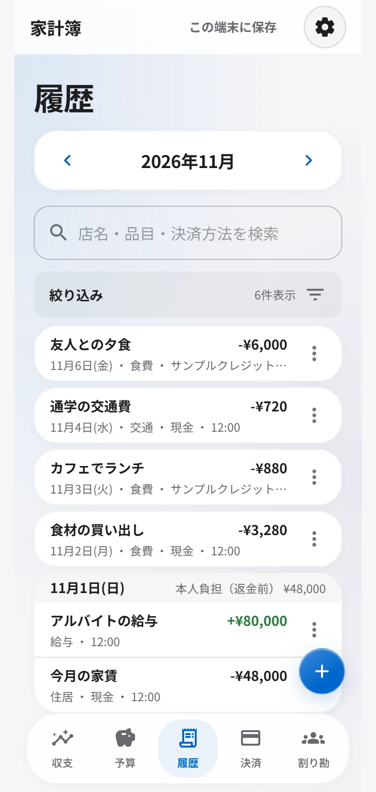
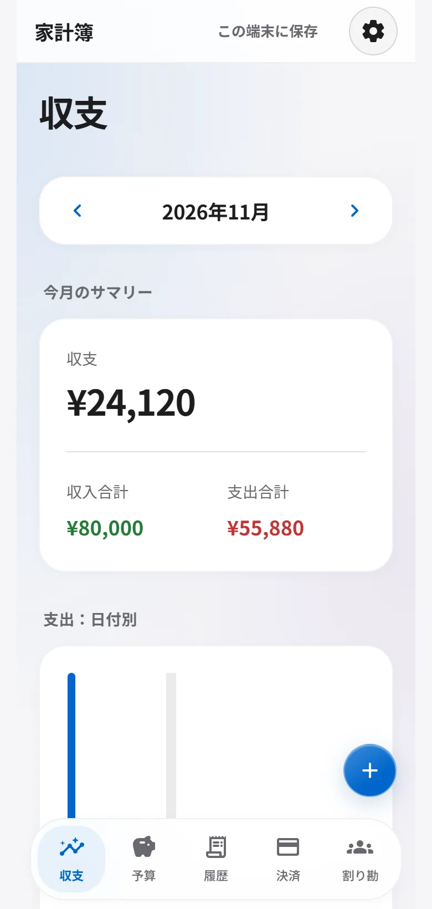
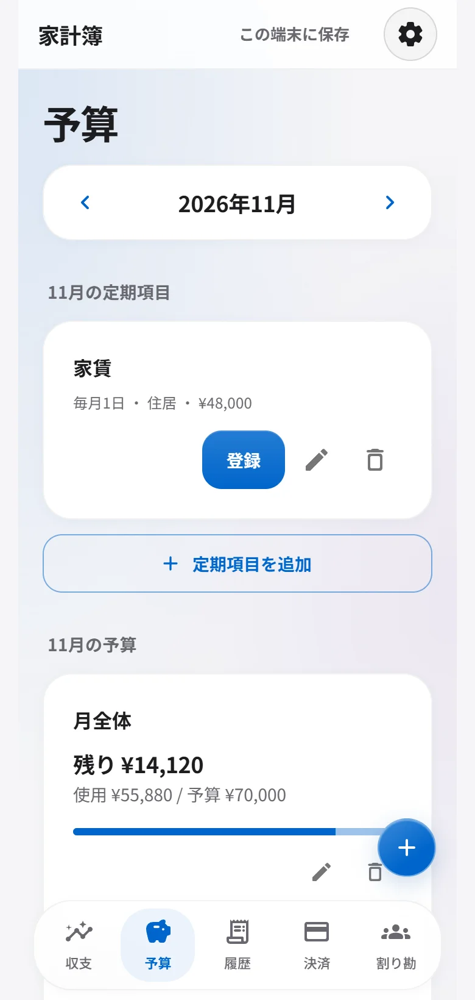
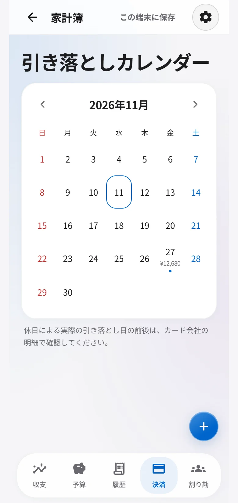
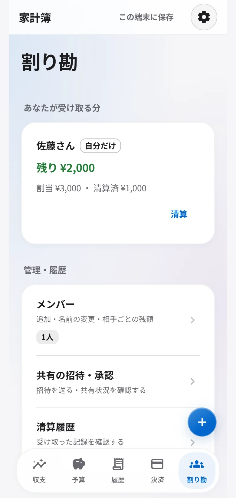

履歴
あの支出を、探せる。
月送りとキーワード検索に加えて、期間・金額・品目・決済方法などで絞り込み。過去の明細は現在日時で複製でき、明細データはCSVにも出力できます。

毎日の記録から、次の支払いまで
収支を振り返る。予算を決める。
カードの引き落としや割り勘も見渡せる。
暮らしのお金を、ひとつの家計簿に。

5つのタブで、お金を整理
月の収入・支出を確認し、日付別の棒グラフと品目別の円グラフで振り返る。毎月の予定や過去の明細も、必要なときに見つかります。
予算
月間予算を全体・品目別に設定。使用額・残額・進捗を、収支とは別の予算タブで確認できます。
定期項目は自動登録ではありません。「登録」を押した月だけ追加します。

決済
カードごとの引き落とし予定を日付で確認。カード会社の確定請求額を入力して差額を見比べ、請求確定・引き落とし済みまで管理できます。
銀行・カード会社との自動連携ではありません。締め日・引き落とし日は登録内容をもとに計算します。休日による日付調整は行わないため、実際の明細をご確認ください。

履歴
月送りとキーワード検索に加えて、期間・金額・品目・決済方法などで絞り込み。過去の明細は現在日時で複製でき、明細データはCSVにも出力できます。

割り勘
メンバーごとに負担額を設定。登録ユーザーとの連携で、相手側にも払う分を表示。受け取った清算額を記録して、残額を管理できます。

入力も、振り返りも続けやすく
カメラやアルバムの写真から、店名・合計金額・日付を入力。読み取り結果を確認して保存できます。
ログインとオンライン接続が必要です。
明細はCSVに出力。全データはJSONで書き出し・取り込みができ、バックアップにも使えます。
アプリを一度読み込んでいれば、オフラインでも端末内に記録。ログイン中は通信が戻るとサーバーへの同期を再試行します。
Gmail連携・試験提供
Gmail連携は現在、運営者が承認した少数の利用者に限って試験提供しています。
通常は読み取り専用でGmailを連携し、アプリ内でAI明細検出に別途同意すると、同意後に届くカード・銀行・電子マネーの明細メールから入力候補を作ります。件名と必要部分を加工してOpenAIへ送信しますが、匿名化は完全ではありません。候補は確認してから保存できます。任意の追加権限と同意後にだけ、保存・同期済みの候補の元メール1通をゴミ箱へ移動できます（初期OFF・Gmailでは通常30日後に完全削除）。メール送信や既読変更は行いません。
AI明細検出は初期OFFで、以前の設定や同意は引き継ぎません。Googleの読み取り権限はGmail全体に及びますが、AIに送るのは有効化後に届いた明細候補メールの件名と必要部分だけです。すべてのメールを認識できる保証はありません。通常の家計簿利用やGoogleログインは引き続き利用できます。Googleのデータアクセス審査は2026年10月30日に申請し、現在は審査対応中です。承認はまだ受けておらず、必要な第三者セキュリティ評価も未完了です。接続・本ポリシーの公開はGoogle審査の承認を意味しません。対象範囲・送信内容・保存期間・解除方法はプライバシーポリシーをご確認ください。
料金
本サービス内のAI入力補助にかかるAPI利用料は運営者が負担し、利用者には請求しません。通信・端末・回線等にかかる費用は利用者の契約に従います。
将来にわたる無料提供を保証するものではありません。将来有料機能を提供する場合は、料金・開始時期・解約・返金等の条件を提供前に別途明示し、必要な同意を得ます。現在の利用によって未提示の有料プランへ自動加入することはありません。利用規約
現在は無料です。アプリ内のAI入力補助のAPI利用料は運営者が負担します。通信料などはご利用の契約に従います。詳しくは利用規約をご覧ください。
「アカウントなしで使う」を選ぶと、この端末で記録できます。記録を別端末でも使う場合は、アカウントで同期するか、JSONで書き出して取り込んでください。
記録や下書き・表示設定などは、この端末のブラウザ内に保存します。ログイン中はサーバーへ同期します。端末の紛失や閲覧データの削除で未同期データが失われる場合があるため、必要な記録は書き出して保管してください。
アカウントで同期するか、全データをJSONで書き出して移行先で取り込んでください。端末だけに保存している場合は、移行前にバックアップを保管してください。
銀行・カード会社との自動連携ではありません。カードの締め日・引き落とし日は登録内容をもとに計算します。Gmail連携は、利用通知から確認用の入力候補を作る試験提供の機能です。提供対象とデータの取り扱いをご確認ください。
一度読み込んでいれば、端末で記録できます。ログイン中は接続が戻ると同期を再試行します。レシート読み取りにはログインとオンライン接続が必要です。
アカウントの削除は設定から行えます。本人確認後の削除は取り消せないため、必要なデータは先に書き出してください。同期データや別端末・バックアップの取り扱いはプライバシーポリシーをご覧ください。